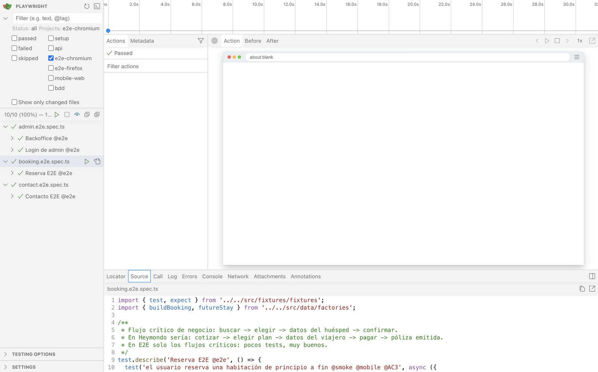

⤢ ver 5 capturasPLAYWRIGHT · TYPESCRIPT · GITHUB ACTIONS · APPIUM
Booking QA Automation
Framework completo sobre una web pública de reservas: de la historia de usuario en Jira a los tests que corren solos en cada cambio, en web, API y móvil.
- 25 tests de API y 10 E2E con Page Object Model
- Criterios de aceptación en Gherkin ejecutables (playwright-bdd)
- CI en 3 capas con sharding: regresión en ~1,5 min
- App Android con Appium + WebdriverIO
- Trazabilidad completa en Jira: US → TS → TC → TX → Bug